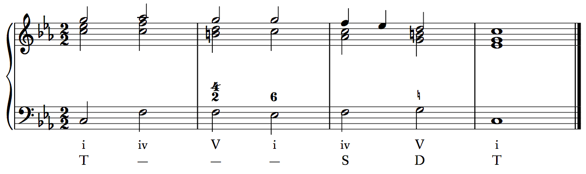

Harmonic syntax - prolongation
Following are the primary techniques used to prolong functional zones in an idealized classical phrase. Examples of specific progressions and notational conventions are provided.
# Change-of-figure prolongation
A change-of-figure prolongation occurs when the bass repeats (or is sustained, or drops an octave) while one or more of the upper voices change. The function remains the same (T/S/D), but the Roman numeral may change.
Examples include progressions like V–V7 (both D5) or IV–II6 (both S4).
# Change-of-bass prolongation
A change-of-bass prolongation occurs when two chords of the same function appear back-to-back, but with different bass pitch classes. In some cases, these are changes of inversion: I–I6, for example. In other cases, the root changes: I–III or IV–II, for example. What makes these progressions prolongations is that the function remains the same. I–I6 prolongs tonic function (T1–T3), and IV–II prolongs subdominant function (S4–S2).
# Contrapuntal prolongation – passing chord
Many change-of-bass prolongations involve a skip of a third in the bass, such as I–I6 (T1–T3). Just as in second-species counterpoint a melodic third from downbeat to downbeat invites the use of a weak-beat passing tone, a melodic third in the bass between these two chords invites the use of a passing chord.
The bass note of a passing chord will fill in the third with stepwise motion. The melody will also often contain passing motion.
A function is typically prolonged by contrapuntal chords belonging to the function that precedes it in the standard cycle. T is prolonged by D, D by S, and S by T.
A passing chord that prolongs the above T1–T3 progression would then be a dominant chord (D precedes T) with scale-degree 2 in the bass (the passing tone between scale degrees 1 and 3): D2.
Common D2 chords are V6/4, V4/3, and VII6. Thus, a I–I6 prolongation can involve those as passing chords. The following T1 D2 T3 progression uses a viiº6 to prolong tonic. Listen to this example, and then try to change the progression to a properly voiced I V6/4 I6 progression.
Note that while scale-degree 2 in the bass can support a II chord, II is subdominant, and so it is not used as a passing chord to prolong tonic.
# Contrapuntal prolongation – incomplete neighbor chord
In second-species counterpoint, variety could come by using a substitution in place of a passing tone. This leap of a fourth followed by step in the opposite direction still outlines a third from downbeat to downbeat, but offers a break from too much stepwise motion in the counterpoint.
In harmonic writing, the same effect is obtained by an incomplete neighbor chord. The bass follows the same incomplete-neighbor pattern as the second-species counterpoint, and the function of the contrapuntal chord is the same as its passing-chord counterpart. Thus instead of a passing motion of T1 D2 T3, a substitution pattern in the bass would produce T1 D4 T3. (In Roman numerals, that progression would almost invariably be I V4/2 I6, as it is in the following example.)
# Contrapuntal prolongation – complete neighbor chord
Just as a neighbor tone in second- or third-species counterpoint could be used to ornament a single tone and return to it, a neighbor chord uses a neighbor-tone motion in the bass to prolong a function and return to the original bass pitch. The function of a neighbor chord follows the same principle as the passing or incomplete neighbor chord. Following are some examples of neighbor-chord prolongations:
- T1 D7 T1
- T3 D4 T3
- S4 T3 S4
- D7 S6 D7
Here is a T1 D7 T1 neighbor prolongation in strict keyboard style. What is the Roman numeral and figured bass for the D7 chord? What is the least number of changes you can make to it in order to transform it into T3 D4 T3?
Just as third-species counterpoint has a double neighbor figure, harmonies can be prolonged by two chords using a double-neighbor figure in the bass. The most common double-neighbor prolongation is T1 D2 D7 T1 (commonly I V4/3 V6/5 I).
# Contrapuntal prolongation - divider and embellishing chords
In second-species counterpoint, an interval subdivision divided a large leap between downbeats into two smaller leaps. Likewise, a divider chord takes a large leap between bass notes in a change-of-bass prolongation (or a simple octave leap in the bass) and divides it into two smaller leaps.
Divider chords almost always prolong tonic function, and can do so using either subdominant or dominant dividers. The most common divider-chord prolongations are:
- T1 D5 T1 (I V(7) I), where the bass ascends or descends an octave between T1 chords.
- T1 S4 T1 (I IV I), where the bass ascends or descends an octave between T1 chords.
- T1 S6 T3 (I IV6 I6 or I IV6 III), dubbed the champagne progression by theorist Gene Biringer, because it is "the progression you pull out when you want to impress a date."
Following is a champagne progression. Which version is it (I6 or III)? What one thing must change in order to form the other version? What default voice-leading rule is "broken" in this progression? (Note, because of rule conflicts, this progression will always break that rule, and it will always have these scale degrees in the melody.)
In the case of T1 D5 T1 and T1 S4 T1, the same harmonic progression can occur without the bass changing register. In other words, the bass leaps from do to sol or fa, but returns to the original bass note. Instead of dividing a large leap, the bass note of the intervening chord looks like an embellishing tone from third species. (In third-species counterpoint, an embellishing tone ornaments another tone by leaping to another consonance — usually a third or fourth away — and returning to the original tone.) Thus, what would otherwise be a divider chord is instead an embellishing chord.
Following is a T1 D5 T1 divider prolongation. What single change can make it an embellishing chord prolongation?
# Subsidiary harmonic progressions
The last type of prolongation is not contrapuntal, but instead involves weak versions of the typical T–(S)–D–T progression. When such a progression fails to produce a proper cadence — that is, it ends with contrapuntal chords such as D7–T1 or D4–T3, or uses a "deceptive resolution" D5–T6 (V–VI) in place of the cadential D5–T1 — the progression is called a subsidiary harmonic progression (this term comes from Edward Aldwell & Carl Schachter; Steven Laitz calls the same progression an embedded phrase model). It is "subsidiary" (or "embedded") because instead of occupying the whole phrase, it is subsidiary to (or embedded in) a larger progression.
These subsidiary progressions always prolong tonic. They are labeled in an analysis by following the initial T with a line:
T—————
For instance, consider the following possible harmonic progression for a phrase:
The first progression through the T–S–D–T cycle does not produce a cadence when it returns to T. However, it cannot be said to be a contrapuntal prolongation because it follows the normal functional cycle perfectly. Thus, it is a subsidiary progression.
# Plagal progressions
As a rule, T is used for contrapuntal prolongation of S, S prolongs D, and D prolongs T. However, there are some common patterns in which S is used to prolong T.
The champagne progression (I–IV6–I6 or I–IV6–III) is one. Another is the S4 divider, as well as the related S4 embellishing chord. All are described above.
One other common pattern is to use IV (S) as a complete or incomplete neighbor to I6 (T). Common progressions include I IV I6 and I6 IV I6.
Also common is a change-of-figure prolongation of T1: I–IV6/4–I. The IV6/4 can be considered an S chord, but it is often more appropriate simply to consider the sixth and fourth above the bass in that chord to be neighbor tones to the fifth and third. Simply label such a progression T——— underneath the Roman numerals.
# Prolonging a progression
Occasionally, a contrapuntal chord is used not to prolong a single function, but to connect chords of different functions — in other words, to prolong a progression.
The most common occurrence is when a bass line moves down by step from do to sol, which is especially common in minor. The bass line do–te–le–sol is harmonized by T1 D7 S6 D5 (usually i v6 iv6 V — the chord qualities are important in this progression, called the "lament"). In this progression, the S6 is a functional subdominant leading to the cadential D5. The D7 chord, then, is simply a passing chord that connects T1 with S6. To notate this, draw and arrow between T and S underneath the Roman numeral analysis.